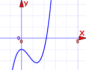
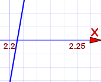

Approximate Solutions
Sometimes it is difficult to solve an equation exactly. But an approximate answer may be good enough!
What is Good Enough?
Well, that depends what you are working on!
- If you are dealing with millions of dollars then you should try to get pretty close indeed. And that might need many significant digits.
- If you are calculating how much food to buy for a party, then a small error won't matter so much. You could always buy a little extra to be sure.
- Or something in between
So understanding what you are working on helps you know how accurate you should be.
Solving Equations
To help reduce error, when solving equations:
- first solve for x = something
- then do any calculations
Like this:
Example: Solve x/7 − 6.3068 + 2π = 0 (to 3 decimal places)
Why wait until the end to do the calculations? Well, every time you do a calculation you can introduce an error. If you do this several times your errors can accumulate to be quite large.
Checking
If your answer is approximate, then your checking will also be approximate.
Example: Check that x = 0.165 solves x/7 − 6.3068 + 2π = 0
Not quite right, but very close.
Graphical Estimation
You can make good approximations using graphs, particularly by using a zoom function, like on our Function Grapher.
Here is an example:
Example: estimate the solution to x3 − 2x2 − 1 = 0 (to 2 decimal places).
Solution: Plot it!
Here is my first attempt. I can see it crosses through y=0 at about x=2.2

Let us zoom in there to see if we can see the crossing point better:

It crosses between 2.20 and 2.21 ... slightly closer to 2.21. We are asked for 2 decimal places, so our answer is:
x3 − 2x2 − 1 = 0 at about x = 2.21
Check: (2.21)3 − 2(2.21)2 + 2 = approx 0.025, close to y=0